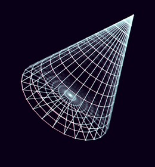

First, we defined the essential metrics:
This is adequate for the math. However, unless we ray tracing, we'll need some more metrics that describe a faceted convex solid 3D shape.
We define a ring as a regular polygon that roughly represents the circle that's formed when a plane slices the cone. For this to be a perfect circle rather than an ellipse, the plane's surface normal must be parallel to the cone's central axis.
The reason for using a regular polygon is that circles are basically overkill when rendering faceted shapes. If you give the polygon enough vertices, it's practically indistinguishable from a circle.
There are more considerations we haven't mentioned yet. The first
is how to we define the location of the shape in it's own
native coordinate system. The most straight forward choice is
to treat ( 0, 0, 0 ) as the center point of the cone's base
circle. We then define our axes as follows:
| Axis | Direction | Unit Vector |
|---|---|---|
| X | Right | ( 1, 0, 0 ) |
| Y | Up | ( 0, 1, 0 ) |
| Z | Front | ( 0, 0, 1 ) |
Defining our shape's "location" in it's own space along with the above Identity Matrix gives us the rest of the information we need to draw our cone in standard position. That is, with no additional transformation(s) applied.
Show here is a basic example in JavaScript:
const int =( o )=> Math.parseInt ( o );
const flt =( o )=> Math.parseFloat( o );
const min =( o )=> Math.parseFloat( o );
const max =( o )=> Math.parseFloat( o );
const mid =( o )=> Math.parseFloat( o );
const abs =( o )=> Math.parseFloat( o );
const sgn =( o )=> Math.parseFloat( o );
class ConeShape {
constructor( radius, height, rings, sides ) {
this.state = {};
this.state.vert = []; // Vertices
this.state.face = []; // Facets
this.radius = radius;
this.height = height;
this.rings = rings;
this.sides = sides;
}
get radius() { return this.state.radius }
get height() { return this.state.height }
get rings() { return this.state.rings }
get sides() { return this.state.sides }
set radius( n ) { }
set height( n ) { }
set rings( n ) { }
set sides( n ) { }
}
|~~~~~~~~~~~~~~~~~~~~~~~~~~~~~~~~~~~~~~~~~~~~~~~~~|
This file was started in the qb64pe folder for
the Demos Repository.
It was moved to Demo Notes to be more easily located.
|~~~~~~~~~~~~~~~~~~~~~~~~~~~~~~~~~~~~~~~~~~~~~~~~~|